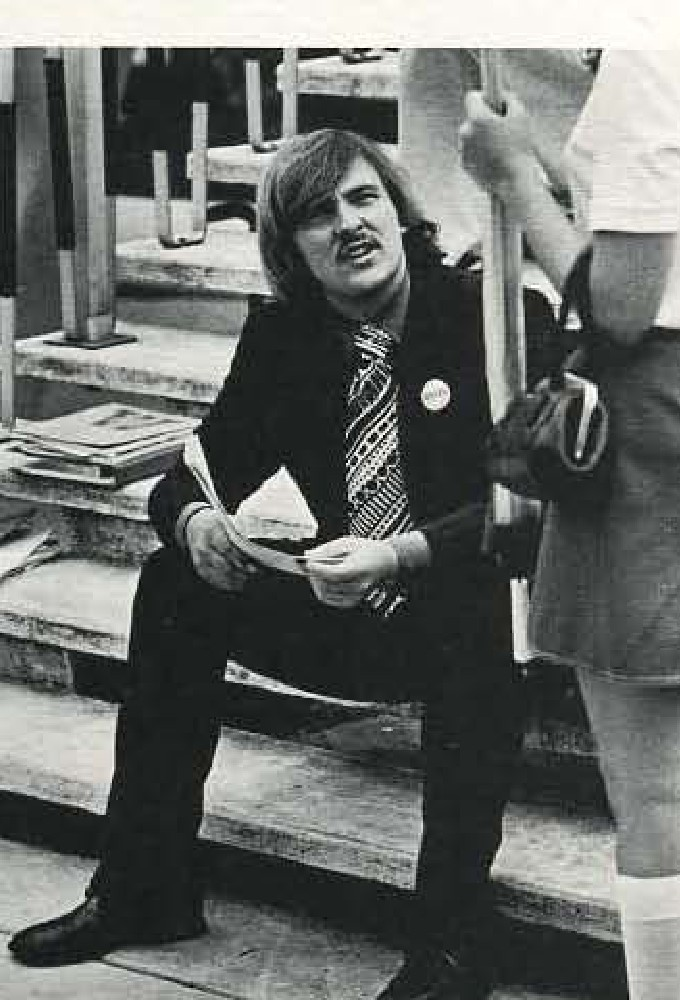
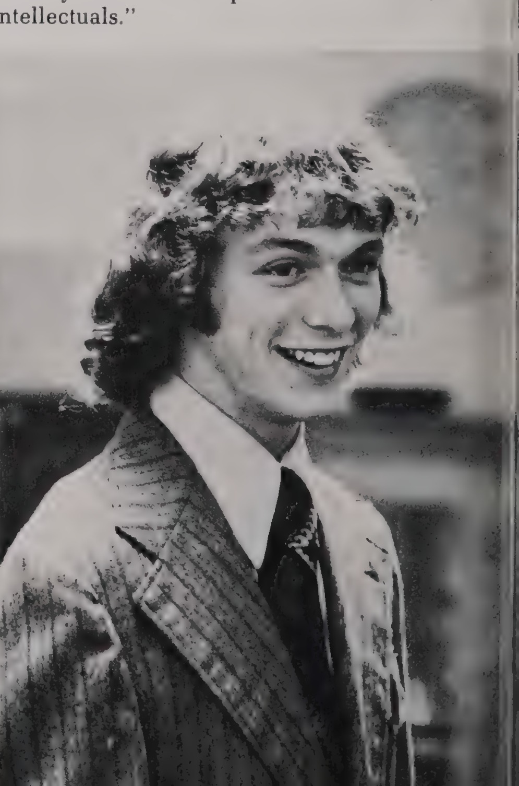
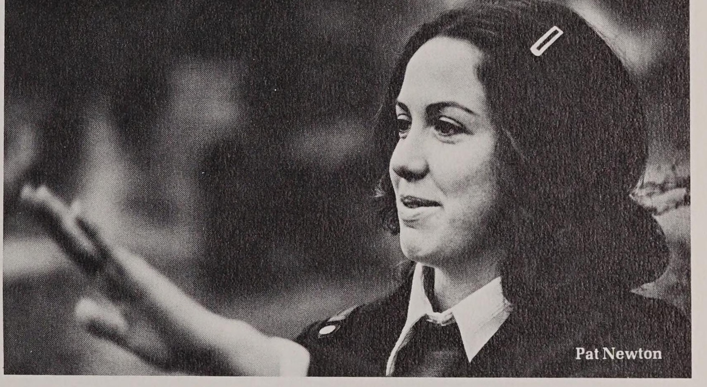
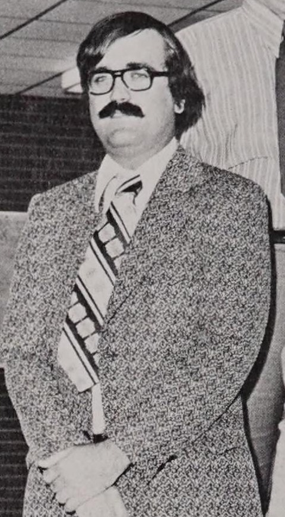

#
Ed Jordan's theme is progressivism
The Herald profiled presidential candidate Ed Jordan ahead of the ASG election, describing his campaign theme as progressivism.
Associated Students · academic year


Confirmed by direct Herald election coverage: he ran on a platform the paper labeled progressivism, beat Bob Hatfield in the 20 April 1972 election, and the Herald reported the win five days later. Paired on the plaque with Michael Fiorella, the student regent that year.
Jordan ran for the Associated Student Government presidency on a platform the Herald's Roger Miller labeled progressivism, profiled a week before the vote. Congress had separately voted to place his opponent, Bob Hatfield, on the ballot after a dispute over Hatfield's eligibility.
Jordan beat Hatfield in the 20 April 1972 election; the Herald reported his win on 25 April under the headline 'Ed Jordan Wins Top Office,' in the same issue as an editorial by Pence and Carter arguing the new ASG president needed cooperation and support.
Edward Jordan's name entered the Herald's letters columns on November 7, 1972, when he and Charles Boteler urged readers to restore ideals. The digitized index does not label the ASG office Jordan held.
On April 10, 1973, as top ASG offices went on the line in the spring election, a letter praising Ed Jordan ran in the Herald.
Jordan stayed in student politics after his year: in April 1974 he wrote to the Herald judging Steve Henry the most qualified candidate in that spring's races.
Sources for this account
Everything the archive holds on Edward Jordan, Jr., gathered on one page.
Student regent, not president. Sworn in 26 September 1972 alongside gubernatorial appointees Gerald Edds and Chalmer Embry, who Gov. Wendell Ford had named the previous month.
In September 1972 the Herald profiled Michael Fiorella, the Associated Student Government vice president, under the headline that he was anti-apathy.
A week later the Herald reported that Fiorella had won the student seat on the Board of Regents.
Fiorella was sworn in on September 26, 1972, alongside Gerald Edds and Chalmer Embry, the board's two other new members.
Sources for this account
Everything the archive holds on Michael Fiorella, gathered on one page.
Everyone the record shows in office this year. Each name goes to their own page, with every office they held and everything the archive says they did.
Boteler was administrative vice president in 1972-73, the first year the office existed in that form. The volume explains that the revised constitution split the vice presidency in two, one for administrative duties and one for activities, and that Boteler and Mike Fiorella held them respectively. Away from ASG that same year, the 1973 Talisman records Boteler co-leading the campus 'McGovern for President' campaign with Pat Long, serving as an alternate delegate pledged to George McGovern at the Democratic National Convention, and helping lead a McGovern-Shriver teach-in on the Vietnam War with faculty members Jim Wayne Miller and Nick Kafoglis.
1973 Talisman, Associated StudentsNewton was ASG treasurer in 1972-73. The same paragraph sets out the remade Congress: ten representatives at large, two from each academic college, the president and vice president of each class, and the ten Academic Council members and alternates. The same volume's Who's Who feature profiles Newton separately as an accounting and economics major who was a member of the business games team and of Who's Who Among Student Leaders of America, and who served as both president and treasurer of Alpha Delta Pi sorority.
1973 Talisman, Associated Students, and Who's Who, p. 227Clark was ASG secretary in 1972-73, the year the body took the name Associated Student Government in place of the Office of Associated Students.
1973 Talisman, Associated StudentsThe archive records Fiorella only as student regent; the sources say he held both offices. The 1973 Talisman states that under the new constitution two vice presidents were elected, one for administrative duties and one for activities, and that Charles Boteler and Mike Fiorella held them respectively; the Herald of 1 September 1972 calls him vice president for activities (https://digitalcommons.wku.edu/dlsc_ua_records/4871) and the 1974 Talisman says he was elected ASG activities vice-president in his junior year and was also student regent. He headed the Activities Committee, which booked Chicago, Jethro Tull and the Beach Boys, and he proposed raising the student activity fee to $5 a semester from the $1.50 then charged, the quoted words being his verdict on the existing funding. A caption in the same volume says he was chosen as the voting student member of the Board of Regents because ASG president Ed Jordan was disqualified for being an out-of-state student, while the volume's Board of Regents page says he was elected student representative by the student body; both statements come from the 1973 Talisman. Sources print him as Mike Fiorella.
1973 Talisman, Associated Students, pp. 74-75, and Profile, p. 237Carter led the ten-member Judicial Council in 1972-73, which heard student appeals on parking tickets, dorm campusing and election violations and served as the deciding court for campus rule violations.
1973 Talisman, Associated StudentsCongress unanimously approved Long, a senior speech major from Franklin, Ohio, as parliamentarian at its first meeting of the 1972-73 year, held 31 August 1972. The 1973 Talisman also names him as one of the two students who headed the Legal Rights Committee, which worked on a bail-bond fund for arrested students and on the appeal of the 'Fly' censorship case.
Herald 52:3, 1 Sep 1972, 'New appointments win ASG approval'Berman was approved by Congress as sergeant-at-arms at the first meeting of the 1972-73 year, in the same vote that made Pat Long parliamentarian.
Herald 52:3, 1 Sep 1972, 'New appointments win ASG approval'Congress approved Meade as chairman of the Rules and Elections Committee at its first meeting of 1972-73. Speaking as co-chairman of the committee in the same issue, he said filing was so thin that four colleges had only one candidate each for the Academic Council; the quoted words are his. The 1973 Talisman describes the committee as headed by R.G. Meade and Fred Price, and says it set campaign guidelines and heard election disputes, drawing particular attention during the disputed Homecoming Queen election and re-election that autumn. The Herald prints him as R. G. Meade in one story and Robert Meade in another on the same page.
Herald 52:3, 1 Sep 1972, 'New appointments win ASG approval'ASG's own newsletter of 3 November 1972 calls Cheak committee chairman and reports that he had submitted a list of proposals to the Physical Plant to obtain containers for a campus recycling project; the January 1973 issue records that the first fortnight of collection brought in over a ton and a half of material, mostly newsprint, and that the project nearly ended when the Alton Box Board Co. could not collect the paper. The 1973 Talisman calls the environmental work ASG's most notable achievement in student services that year. A Joe Cheek is listed in the Herald as one of the ten Rules and Elections Committee members approved the same autumn; the two spellings are not reconciled here.
ASG Newsletter, Vol. 1 No. 1, 3 Nov 1972 (WKU SGA collection)The 1973 Talisman says the Legal Rights Committee was headed by Pat Long and Gary Whitfield, and that it dealt with community legal problems involving students, worked to set up a bail-bond fund for arrested students, and pressed the university over the expulsion of students charged but not convicted of drug violations, the refusal to show X-rated films in the student centre and the appeal of the 'Fly' censorship case. The volume uses the word 'headed'; it does not give either man the title of chairman.
1973 Talisman, Associated Students, pp. 74-75The 27 things student government staged or ran for the campus this year, drawn from the chronology below. Every one of them also appears on the programmes page, which runs the whole sixty years together.
The Herald profiled presidential candidate Ed Jordan ahead of the ASG election, describing his campaign theme as progressivism.
Ed Jordan and Bob Hatfield contested the ASG presidency in the day's election, after Congress had voted to place Hatfield on the ballot. The same issue carried both candidates' comments on key election issues.
The Herald reported Ed Jordan's win under the headline 'Ed Jordan Wins Top Office,' alongside an editorial by Pence and Carter arguing the new ASG president needed cooperation and support to succeed.
The Herald opened the year reporting Associated Student Government plans for a year of involvement, in an issue that also covered the regents approving a five dollar vehicle registration fee.
Gerald Edds and Chalmer Embry. The same issue reports the best ASG course evaluation yet, students questioning the $5 car registration fee, and filing opening for ASG offices.
The Herald judged ASG's course evaluation the best yet, as filing opened for fall ASG offices.
ASG expanded its registration week programme in autumn 1972 to include a street dance and two mini-concerts. The Talisman counted this among the activities of the Activities Committee under vice president Mike Fiorella.
ASG provided four free mini-concerts over the year, by Voice of Cheese, Tiny Alice, Orphan, and Rolfe Kempf with David McHugh. Weekend performances at the Cellar coffee house in West Hall rounded out the music ASG offered; the Talisman counted seven mini-concerts across the year in all.
ASG's student discount programme continued for a sixth year, contracting with Bowling Green merchants who gave discounts to students. Plans were made to return to a discount coupon book alongside the discount card to increase use of the service.
Five students filed for the student seat on the Board of Regents. In the same issue, an ASG resolution deplored a cheerleader ruling as the university bowed to Black students' demands after a bitter squabble over squad selection.
ASG funds flew as the group set a Chicago concert, corrected a tactical error by adding more polls to a campus vote, and made its student activity card available.
The Herald announced that the ASG activity card was available. The Talisman described it as a programme begun two years earlier that admitted part-time students and the spouses of students to ASG activities for a nominal charge.
Michael Fiorella, the Associated Student Government vice president, won the student seat on the Board of Regents. Days earlier the Herald had profiled him as anti-apathy.
Michael Fiorella took the student seat alongside Edds and Embry. The same issue reports 'Slack Time at Associated Student Government Congress', an ASG bankruptcy plan and the open-dorm visitation fight continuing.
The Associated Student Government rejected President Dero Downing's position on an Office of Black Affairs, one of the sharpest confrontations of the fall. A congressman's letter the same day called criticism of ASG unjustified.
ASG brought Buffalo Bob Smith and his revival of the Howdy Doody show to Van Meter Auditorium in October 1972. The Talisman called the two-and-a-half hour programme professional and a huge success, with Smith leading a rendition of 'Clarabell the Clown' and playing Chopin, Mozart and Bach.
ASG presented Chicago on 4 October 1972 as a free concert, with pianist Robert Lamm fronting the horn section. The Talisman called it one of the season's hottest entertainment nights and said the band was soon forgotten once Jethro Tull arrived three weeks later.
The Herald of 6 October 1972 reported that Associated Student Government would launch a paper recycling project. The 1973 Talisman recorded that the project ran: paper was collected in ecology trash cans set at points across campus, collection was later extended to cans and bottles, and the money from the sale of recycled paper went back into the work of the Environmental Committee, which Joe Cheak headed.
Carter Pence reported that the ASG Congress had voted to appeal a decision of the office of Student Affairs. The archive does not hold the article's text, so the decision appealed and the outcome are not established.
Ian Anderson brought Jethro Tull to Diddle Arena on 26 October 1972. Many in the audience called it the best concert ever staged at Western, but the Talisman recorded that the pay concert was a major financial loss for ASG.
a major financial loss for ASG, amount not stated
ASG sponsored the political comedian Pat Paulsen on the evening of 1 November 1972, in Homecoming week, with a lecture titled 'Pat Paulsen Looks at the 70's'. The Talisman recorded that ASG's lecture programme for the year began with him.
After two years in the planning stages, the ASG Newsletter began publication with the November 1972 issue. It came out monthly and was meant to keep students aware of what was happening on campus.
A count of the 1972 Homecoming Queen election showed a difference of 275 between ballots cast and voters recorded. ASG's Rules and Elections Committee called for a re-election of the queen and declared only the Who's Who vote and the Congress elections for three colleges valid. The re-vote was held on the Friday before Homecoming Day and was disrupted for over an hour when a group of Black students blocked the polls; the polls reopened shortly before 10 a.m. after their leaders met ASG officers.
ASG sponsored the Beach Boys in Diddle Arena on Friday 3 November 1972. Students had come to hear the music of the sixties and heard little of it; the Talisman reported the concert was not well received until the band turned to its golden oldies, and that many went home disappointed.
The ASG Homecoming Dance in the Garrett Conference Center Ballroom concluded the full day of Homecoming activities on 4 November 1972. It followed the game against Middle Tennessee and the reception in Diddle Arena.
The rock band Orphan played an ASG mini-concert on the Wednesday night of 15 November 1972. Al Cross reviewed it for the Herald under the headline that Orphan gave a bad crowd good music.
Al Cross reported in the Herald that ASG had lost money on its fall concerts. The Talisman confirmed the loss on fall entertainment without giving a figure, and the shortfall shaped the argument over the head fee that ran into the spring.
loss on fall concerts, figure not given in the sources consulted
The Herald reported that ASG would consider establishing a Free University. The programme of no-cost, no-credit evening courses in subjects such as knitting, photography and yoga began the following spring under coordinator Glenn Jackson.
ASG scheduled a symposium on venereal disease, run in cooperation with Operation Venus and billed as 'V.D. Day'. The Talisman recorded that it was open to Western students, high school students and the public.
The Herald reported that ASG would begin a book exchange. Congress had passed a bill to initiate a textbook exchange on campus, and the exchange ran at the start of the spring semester.
Coretta Scott King and Betty Friedan were both sponsored by the 1972-73 University Lecture Series and ASG. King lectured on excerpts from her book on men's freedoms and their responsibilities; Friedan, called the mother superior of women's lib, spoke on women's liberation. The Talisman does not date either lecture.
After weeks of debate that included an ASG resolution and a committee petition requesting an open visitation policy, President Dero Downing appointed a thirteen-member committee of eight faculty members and five students to study overall university housing policies. The 1973 Talisman does not date the appointment.
Associated Student Government sponsored a student book exchange. The same issue reported a city recycling ordinance had left ASG holding the bag on trash collection for its paper-recycling program.
Associated Student Government considered sending aid to a hospital in North Vietnam, the Herald's Carter Pence reported, as the Paris Peace Accords negotiations neared their end.
ASG opened the spring semester on 2 February 1973 with the rock group Dance in the Garrett Ballroom. The Talisman said the mixture of blues-soul, Latin rock and hard rock made it hard to stay seated, but no more than two-thirds of the seats were filled.
The Herald reported that few students attended the ASG symposiums. The venereal disease symposium had been the flagship of the series.
Carter Pence reported that ASG had resubmitted its bill of rights. John Lyne's 1971 account had described the drafting of a student code of rights as part of the constitutional effort. The archive does not record what became of the resubmitted document.
ASG presented Stevie Wonder with Billy Paul and Whole Oats as the first major concert of the second semester, on Tuesday 13 February 1973. The reviews said Wonder was wondrous, but only 3,850 were on hand and ASG lost between $4,000 and $5,000.
lost between $4,000 and $5,000; attendance 3,850
The University Lecture Series and ASG jointly sponsored Buckminster Fuller, who spoke on 'Humans in the Universe' on 27 February 1973. The same joint series brought Steve Atlas of Nader's Raiders, who addressed about forty-five ASG Congress members and other interested people.
Al Cross reported activities vice president Mike Fiorella proposing a $3.50 increase in the head fee to improve the quality of entertainment. Congress voted on 24 April to put the increase to a student referendum, and the Herald reported the vote set for 2 May 1973.
The Herald reported that the Free University planned to add seven new classes. The programme of free evening courses was in its first semester.
Steven Russell reported that ASG had passed a bill to open its meetings, thirteen months after the Associated Students asked a Herald reporter to leave.
Al Cross reported in the Herald that Ron Beck, the assistant dean of student affairs who handled concert booking, called a concert a mistake. Beck's judgment on which acts belonged on campus was the standing constraint on ASG's programme for the rest of the decade.
ASG wanted students serving as campus police, the Herald reported, while the editorial page argued more time was needed between elections.
Top Associated Student Government offices went on the line in the day's election, and a letter writer praised Ed Jordan as the voting opened.
The Herald of 17 April 1973 billed a mini-concert by Jimmy Buffett for that Thursday. The 1973 Talisman records that Buffett came to campus on 19 April in levis and a cowboy shirt carrying two Martin guitars, and counts him among the two major concerts, three mini-concerts and Bluegrass Festival that ASG sponsored that spring semester.
ASG Congress voted to hold a student referendum on raising the head fee, a week after a Herald editorial argued the fee needed a boost to insure the quality of ASG entertainment. The regents instead voted an increase in ASG's allotment that August.
ASG closed its season on 29 April 1973 with a Bluegrass and Folk Crafts Festival headlined by Lester Flatt and the Nashville Grass, with Mac Wiseman and II Generation. It was the second consecutive year the festival had been held.


Every source cited above, once, with the number of entries that rest on it.
Preferred citation
“1972-73,” SGA 60: Student Government at Western Kentucky University, 1966–2026, revised 28 August 2026, y/1972-73.html
Where a name on this page differs from the plaque in the SGA Chambers, the difference is explained above and recorded on the corrections page.